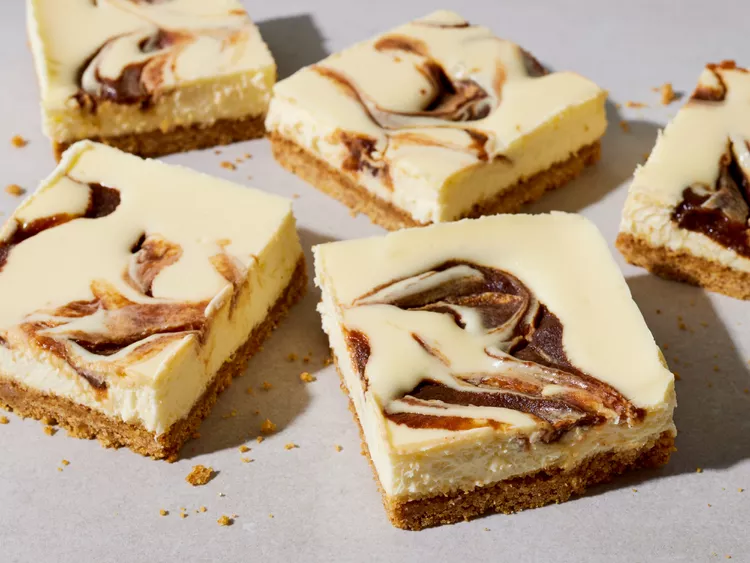

Apple Butter Cheesecake Bars

Ingredients
Graham Cracker Crust
- cooking spray
- 3 cups graham cracker crumbs
- 3/4 cup unsalted butter, melted
- 1/2 cup granulated sugar
- 3/4 teaspoon ground cinnamon
- 1/2 teaspoon kosher salt
Cheesecake Filling
- 3 (8-ounce) packages cream cheese, at room temperature
- 3/4 cup sour cream, at room temperature
- 3/4 cup granulated sugar
- 1/4 teaspoon kosher salt
- 3 large eggs, at room temperature
- 1/4 cup heavy cream
- 1 teaspoon vanilla extract
- 3/4 cup apple butter
Directions
- Gather all ingredients.
-
Prepare the Graham Cracker Crust: Preheat oven to 350 degrees F (175
degrees C) with rack in lower third position. Line a 9- x 13-inch baking
pan with aluminum foil, leaving a 2-inch overhang on the long sides.
Lightly coat pan and foil with cooking spray.
-
Stir together graham cracker crumbs, butter, sugar, cinnamon, and salt
in a large bowl until combined and evenly moistened. Press mixture
evenly into the bottom of the prepared pan.
-
Bake in the preheated oven until lightly golden and fragrant, 7 to 10
minutes. Let cool slightly, about 15 minutes. Reduce oven temperature to
300 degrees F (150 degrees C).
-
Prepare the Cheesecake Filling: Beat cream cheese and sour cream in a
stand mixer fitted with the paddle attachment on medium speed until
fluffy and fully combined, 3 to 4 minutes. Beat in sugar and salt on
medium speed until combined, about 1 minute.
-
Add eggs, 1 at a time, beating on low speed just until combined after
each addition and stopping to scrape down sides of bowl with a rubber
spatula as needed, 1 to 2 minutes total. Add heavy cream and vanilla
extract; beat on low speed just until combined.
-
Pour Cheesecake Filling into cooled Graham Cracker Crust. Evenly dollop
apple butter over Cheesecake Filling; using a butter knife or small
spatula inserted about halfway into filling, decoratively swirl apple
butter using zig-zag motions until desired distribution.
-
Place baking pan inside a large roasting pan and place in preheated
oven. Pour boiling water into roasting pan so it reaches halfway up the
sides of the baking pan. Bake at 300 degrees F (150 degrees C) until
cheesecake slightly jiggles when shaken but is set around the edges, 35
to 40 minutes.
-
Turn off oven and leave oven door cracked open 7 to 8 inches; let
cheesecake cool in oven for 30 minutes. Remove roasting pan from oven
and carefully remove cheesecake from water bath. Let cool in pan at room
temperature 30 minutes, then cover and refrigerate until completely
chilled, at least 4 hours or up to overnight.
-
Using foil overhang as handles, lift the cheesecake out of the pan and
place it onto a cutting board. Cut it into 12 (3 x 2 1/2-inch)
rectangles. Serve chilled.